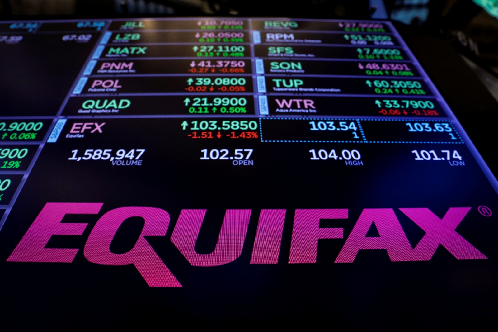

ATAQUES
CIBERNÉTICOS
Un ciberataque es un asalto lanzado por ciberdelincuentes utilizando una o más
computadoras contra una o varias computadoras o red. Un ciberataque puede desactivar computadoras de
forma maliciosa, robar datos o utilizar una computadora atacada como punto de lanzamiento para otros
ataques. Los ciberdelincuentes utilizan una variedad de métodos para lanzar un ciberataque,
incluidos malware, phishing, ransomware y denegación de servicio, entre otros métodos.
Conoce algunos tipos de ciberataques
-
DDoS
Un ataque distribuido de denegación de servicio que intenta hacer que un recurso de red sea inaccesible.
-
Ordenador Zombie
Un equipo infectado por un malware que es controlado por un atacante de forma remota.
-
Ciberdelincuente
Una persona que utiliza computadoras o redes para cometer delitos.
-
Botmaster
El controlador de una botnet, una red de ordenadores comprometidos que realizan ataques coordinados.
-
Botnet
Una red de dispositivos conectados infectados por malware, usados para realizar tareas maliciosas.
-
Ransomware
Un tipo de malware que encripta los datos del usuario y pide un rescate para liberarlos.
-

Disclaimer
Aviso legal que limita responsabilidades o advierte sobre riesgos potenciales.
-
The Morris Worm
Uno de los primeros gusanos informáticos, creado en 1988, que afectó a miles de ordenadores.
-
Ciberwarfare
El uso de ciberataques como parte de tácticas militares entre naciones o grupos.
-
Stuxnet
Un gusano altamente sofisticado que afectó sistemas industriales, famoso por atacar instalaciones nucleares.
-
Moonlight Maze
Una operación de ciberespionaje que se llevó a cabo a finales de los años 90, dirigida contra el gobierno de EE.UU.
-

Operación Aurora
Ciberataque a gran escala dirigido a empresas como Google en 2009, orquestado por actores estatales.
-
Freeze it into submission
Una táctica en la que un ataque masivo "congela" los sistemas, volviéndolos inoperables.
-

WannaCry
Un ransomware que en 2017 afectó a empresas y organizaciones globales, encriptando datos a nivel masivo.
-
Petya
Ransomware que afecta el MBR de los sistemas, causando un cifrado completo del disco duro.
-

Equifax (ataque)
Brecha masiva de seguridad en 2017 que comprometió datos personales de millones de personas.
-
Cam4 (ataque)
Exposición de datos masivos de millones de usuarios debido a un error en la base de datos en 2020.
-

ILOVEYOU
Uno de los virus más dañinos de la historia, que se propagaba a través de correos electrónicos en el año 2000.
-
BonziBuddy
Un software espía disfrazado de asistente virtual con forma de gorila púrpura, popular a inicios de los 2000.
-

Mydoom
Un gusano informático de 2004 que ralentizó el tráfico de Internet y afectó a miles de ordenadores.